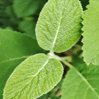

The passion of Giovanni Ussi for photography has deep roots that date back to his childhood, when he approached the magical world of Kodak's plastic cameras. From that moment, he knew that photography would be an essential part of his life.
Since then, he has always felt the irresistible call of nature. The forests, mountains, rivers, and oceans have fascinated him with their immeasurable beauty. And when he held a camera in his hands for the first time, he discovered that he could capture and share those emotions and sense of wonder with others through images.
As he grew up, his photographic skills became refined, and he abandoned analog cameras to explore the infinite possibilities offered by digital photography, as an avid explorer and lover of the wonders hidden in nature. His story unfolds by intertwining the magic of the lens with the thousand shades of colors, shapes, and emotions that the natural universe has to offer.
Giovanni has been inspired by the magic of light and the vast opportunities that modern technology offers to photographers. Giovanni is an explorer of the universe. He has dedicated time and energy to perfecting his style of photographic storytelling, seeking to capture the essence of every subject that crosses his lens. Immersing himself in a nature reserve or strolling through a lush forest is like entering an enchanted world for him. It's as if the universe itself whispers its secrets through every leaf, every ray of sunlight filtering through the trees, and every dewdrop on the petals of a flower. Every photograph he takes is a small window into that magical world. It is an invitation to reflect on beauty, to awaken admiration, and to rediscover our deep connection with the universe that surrounds us. His personal vision also manifests through a variety of elements, ranging from street photography with its spontaneity and authenticity, to the play of light dancing on bodies, architecture, landscapes, and much more.

His continuous search for a unique and recognizable style is driven by an innate passion for photography. He is fascinated by the power of images, their ability to capture emotions, tell stories, and freeze irreplaceable moments in time. Every shot he captures is an opportunity to explore new perspectives, unveil hidden beauty, and convey a message that goes beyond words. Each photo he captures represents a fleeting moment of harmony. When he is there, amidst the rustling of the wind and the singing of birds, he feels part of something greater. He feels in communion with nature itself, and his camera becomes a tool to reveal its majesty.
Explorer of the universe: his dedication to photography has led him to travel to distant places and immerse himself in different vegetation, always in search of new inspirations and new ways to tell nature through his images. Nature photography is not just about taking pictures, but also about patient and respectful observation, to capture the magic of a dancing cloud in the sky or the ephemeral expression of an insect, Giovanni must establish a connection with the environment that surrounds him.
In addition to his passion for photography, he is also a dedicated advocate for sharing knowledge. His goal is to tell stories through photographs that speak of beauty, fragility, and the need to preserve the integrity of the natural environment. He hopes that each image can inspire and raise awareness, causing people to fall in love with Nature and feel the desire to protect it for future generations.
His photographic biography is an ever-evolving journey, a path of discovery and personal growth. He is grateful for every opportunity that has been given to him to capture precious moments and share his unique vision of the world through his photographs. He hopes that his images can inspire others, urging them to look beyond what is obvious and discover the beauty that lies in every corner of life. Nature photography is his meditation, his way of expressing gratitude towards creation. Through the art of images, he seeks to share the energy and unity that can be experienced by immersing oneself in nature. And so, he continues to let the magic dance through his lens, with the enthusiasm of a child and the wonder of a dreamer explorer of the universe.
Every shot that Giovanni captures represents for him an opportunity to explore new perspectives, to immortalize the hidden beauty in the everyday, and to communicate with the world through a unique visual language. He has dedicated himself to the magic of nature and the unity with the universe through his photographs. Every time he immerses himself in nature, he feels an indescribable emotion, as if the beauty that surrounds him merges with his spirit. It's like a perfect harmony, a visual symphony that envelops him completely. Over the years, he has had the privilege of developing a recognizable personal style, characterized by attention to detail, careful composition, and a focus on the use of black and white. Every photograph he creates is a piece of his soul that reveals his unique vision of the world.
His photographic journey is a constant voyage of discovery and growth, an experience that has allowed him to refine his technical skills and develop a deeper sensitivity towards his surroundings. Through his photography he becomes an explorer of the Universe, he seeks to capture the essence of life itself and convey it through his images. Every shot is an opportunity to tell a story, to freeze a fleeting moment, and to evoke authentic emotions. When Giovanni lifts his lens towards the breathtaking landscape of a mountain, the enveloping warmth of a forest, or the delicacy of a flower, he feels a part of something greater. He feels connected to every element present, to every living creature, to the universe itself. It's as if the boundaries between him and the external world dissolve, transforming each shot into a transcendental experience.

Photography for him is much more than just a hobby. It is a way to express himself, to communicate with the world, and to leave an indelible mark in the hearts of those who view his photos. Every time someone stops to admire one of his photographs and is carried away by the emotions it evokes, he feels that he has achieved his greatest goal. Every photo he captures is a narrative, a story that reveals the beauty of nature and the essence that lies behind it. Through his lenses, he manages to capture fleeting moments of pure enchantment. He feels the emotions that manifest in nature and seeks to convey them through his images, allowing others to experience the same wonder that he feels. He is truly an explorer of the Universe.
Giovanni is grateful for the opportunities that have been given to him to explore new horizons and embark on new visual adventures. Every photography project is an opportunity for growth, learning, and pushing the boundaries of his creativity. He is always seeking new ways to challenge himself. Every time he ventures into a new natural environment, he feels like an explorer in an enchanted world. The light filtering through the branches of ancient trees, the soothing sound of a flowing river, and the fresh scent of damp earth inspire him and fill him with joy. His photographs are a testament to the emotions he experiences in these magical moments.
Giovanni is ready to embrace the future with enthusiasm and determination, prepared to explore new frontiers and undertake new visual challenges. His passion for photography continues to guide him along a path of discovery and personal expression, and he can't wait to share his unique vision of the world. He believes that nature photography holds a unique and extraordinary power. Images have the ability to transport people to distant places, uncover unknown worlds, and inspire a deep love for nature. He hopes that his photos can achieve this effect, awakening a connection to the beauty of the natural world that we often forget we possess.
His mission is to share the wonder, serenity, and importance of nature through his images. He hopes that people can feel motivated to preserve and protect natural ecosystems because only through awareness and love for nature can we preserve the magic that surrounds us.
Giovanni, born with a fervent passion for art and creativity, discovered his inclination for abstract expression from a young age. He has always sought to capture emotional essence through the power of color. Abstraction as a means of communication. His works are filled with vibrant energy and vitality, thanks to the use of vivid colors that seem to dance before the eyes.
The overlapping of shapes and colors has become his distinctive signature. With technical mastery and intuition, he is able to create layers of colors that blend and merge harmoniously. This overlapping creates a sense of depth and movement in his works, capturing the viewer's attention and inviting them to immerse themselves in his artistic universe. His creative process is a deeply intimate and personal experience. He allows himself to be guided by instinct and emotions, allowing his subconscious to take control. His art becomes a channel for expressing the complex nuances of the human experience, without the need for words.
Having a deep trust in the potential of the internet, Giovanni has chosen to primarily share his works online. He sees the digital platform as a current and powerful means to exhibit his works to a vast and diverse audience. He strongly believes in the importance of creating a digital artistic community for those who believe in the transformative impact of the internet on contemporary art, where artists from all over the world can connect, collaborate, and inspire each other and become explorers of the universe.


{kind=link}
{kind=link}
{kind=link}
{kind=link}
{kind=link}
{kind=link}
{kind=link}
{kind=link}
{kind=link}
{kind=link}
{kind=link}
{kind=link}
{kind=link}
{kind=link}